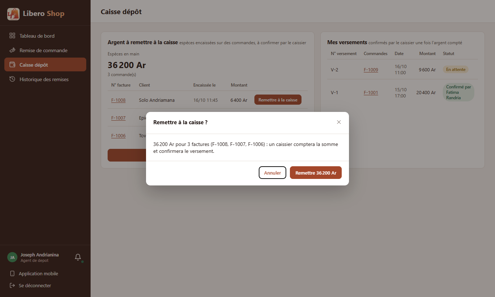
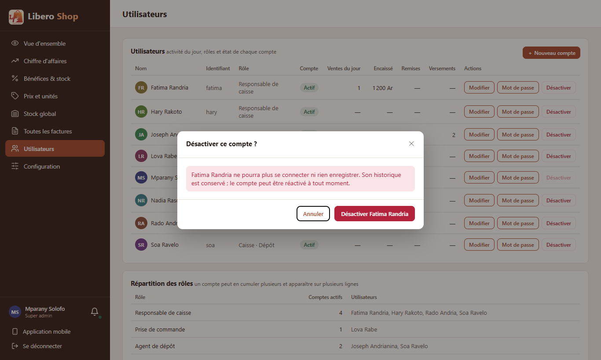

← Tous les comptes rendus de l'interface
UI-82Confirmations cohérentes
- Une seule fenêtre de confirmation pour toute l'application, au style des autres fenêtres. Le bouton dit ce qu'il fait (« Remettre 36 200 Ar »), jamais « OK ».
- Remettre l'argent (une commande ou « Tout remettre ») demande maintenant confirmation, avec le montant et les numéros de facture.
- Désactiver un compte demande confirmation, en rouge, en disant ce que la personne ne pourra plus faire.
- Mise à jour et retour à la version précédente n'utilisent plus la petite fenêtre du navigateur.
- La touche Échap ne ferme plus que la fenêtre du dessus (limite signalée dans UI-50).
1. Le problème
Certains gestes lourds partaient au premier clic : remettre tout l'argent en main, couper l'accès d'un employé. D'autres passaient par la petite fenêtre grise du navigateur (« OK / Annuler »), qui ne ressemble pas à l'application et ne montre pas le montant.
2. Ce qui a été fait
Le texte de la remise d'argent est écrit par une fonction testée (remitQuestion) : une commande
(« la facture F-1007 ») ou plusieurs (« 3 factures (F-1008, F-1007, F-1006) »), et la suite selon la boutique : un
caissier comptera, ou l'argent va directement dans la caisse.
Une seule règle décide quelle fenêtre ferme Échap : celle dont le fond grisé est le dernier de la page. Une facture ouverte par-dessus l'historique d'un produit se ferme seule ; l'historique reste.
3. Le résultat en images
Remettre l'argent
Joseph — agent de dépôt « Tout remettre à la caisse » avec trois commandes encaissées.

Désactiver un compte
Mparany — administrateur

La mise à jour et le retour en arrière utilisent la même fenêtre ; ils ne sont pas montrés ici, faute de mise à jour à installer sur le poste de démonstration.
4. À éviter / attendu
if (!confirm('Remettre la version précédente ?')) {
return;
}<app-confirm-dialog
title="Remettre la version précédente ?"
[message]="…"
confirmLabel="Revenir en arrière"
[danger]="true" … />5. Tableau récapitulatif
| Fichier | Changement |
|---|---|
ui/…/shared/components/confirm-dialog.component.ts | nouveau : la fenêtre de confirmation |
ui/…/core/ui/topmost-dialog.ts | nouveau : quelle fenêtre est au-dessus (pour Échap) |
ui/…/core/orders/remittance.ts | remitQuestion : le texte de la remise d'argent |
ui/…/features/depot/cash-in-hand.component.ts | confirmation avant chaque remise |
ui/…/features/admin/users.component.ts | confirmation avant de désactiver |
ui/…/features/admin/update.component.ts | trois window.confirm() remplacés |
ui/…/shared/components/invoice-detail-dialog.component.ts, stock-history-dialog.component.ts | Échap ne ferme que la fenêtre du dessus |
| Règle | Test |
|---|---|
| La remise dit le montant et la ou les factures, et la suite selon la boutique | remittance.spec.ts |
| Le bouton nomme l'action ; seul lui confirme | confirm-dialog.component.spec.ts |
| Échap ferme la fenêtre du dessus, pas celle d'en dessous | confirm-dialog.component.spec.ts |
Tests : interface au vert (228 tests). Le focus sur « Annuler » est vérifié sur la vraie page (il ne se déclenche pas dans le banc de test). Aucun changement côté serveur.
Hors périmètre, signalé : les autres fenêtres de l'application écoutent encore Échap pour elles-mêmes ;
elles peuvent adopter isTopmostDialog au fil des points qui les touchent.